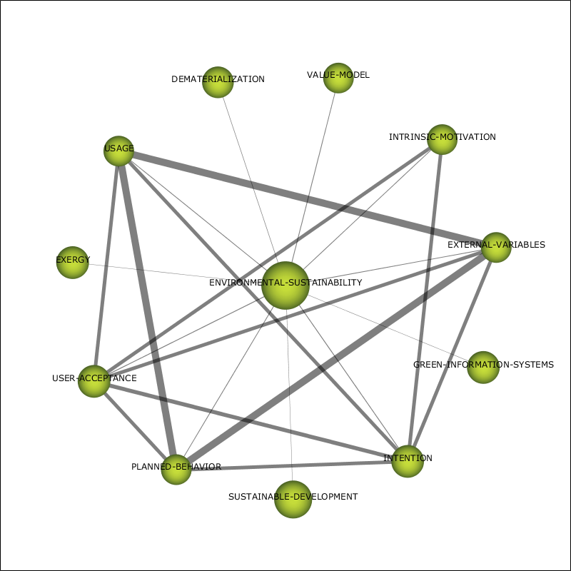
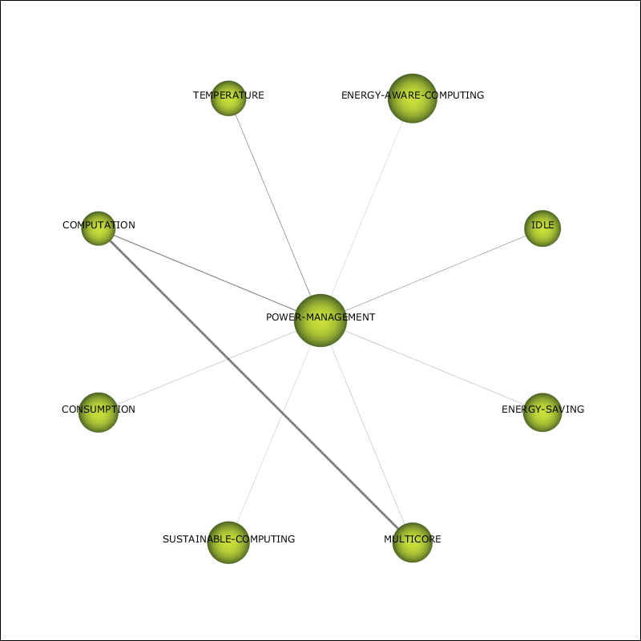
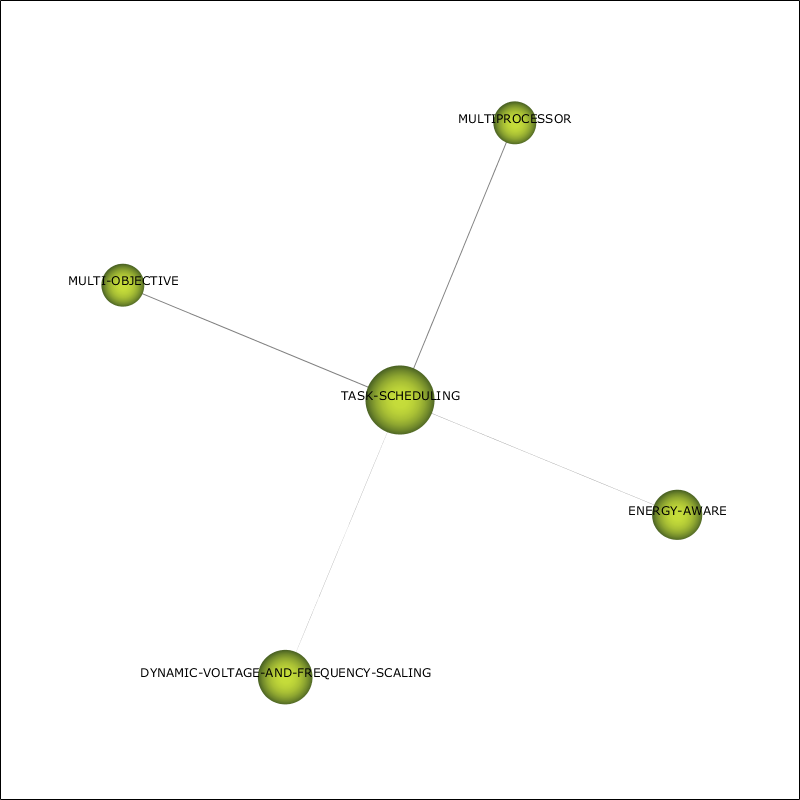
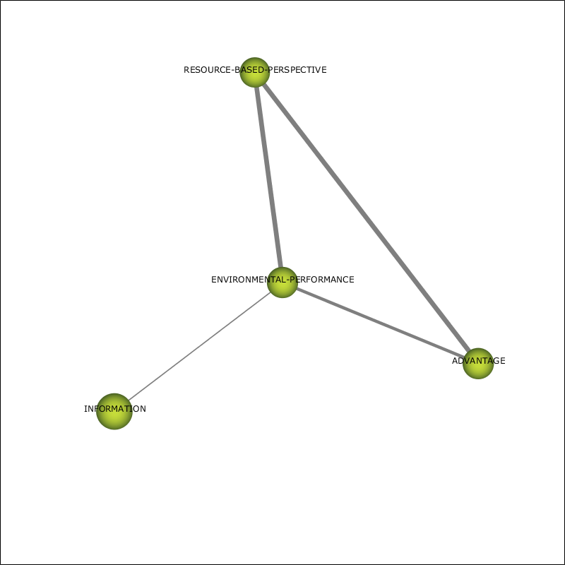
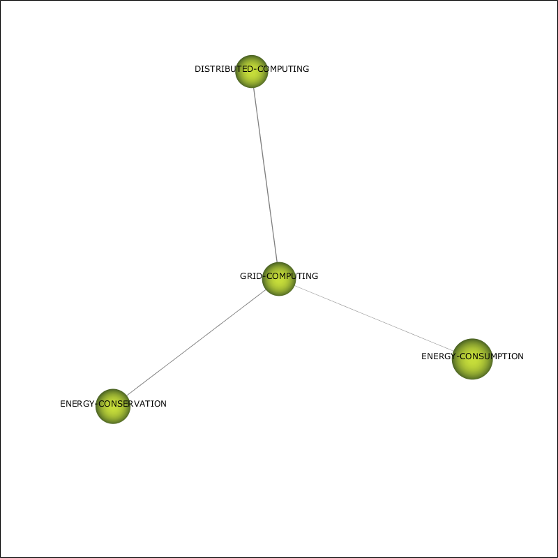
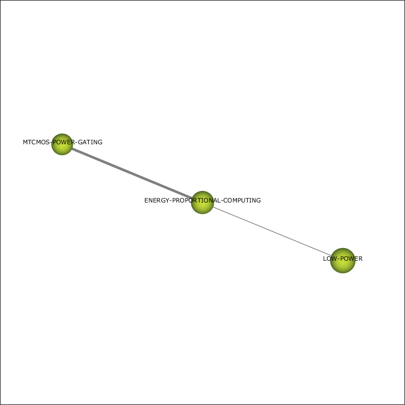
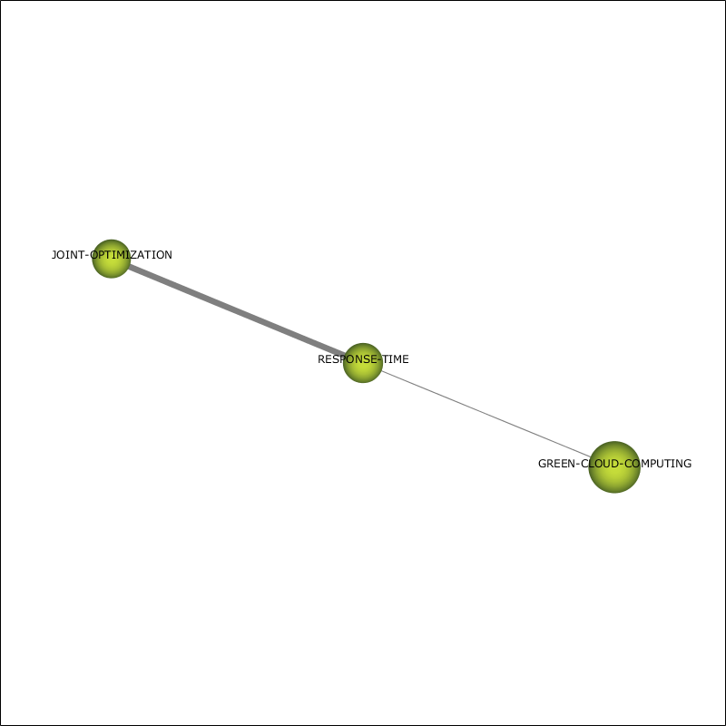
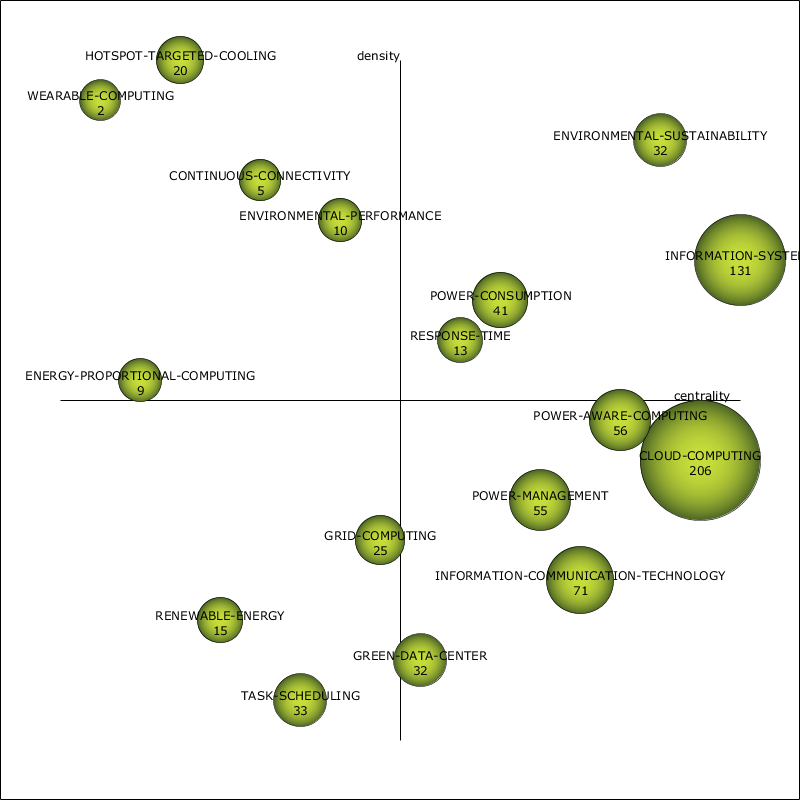
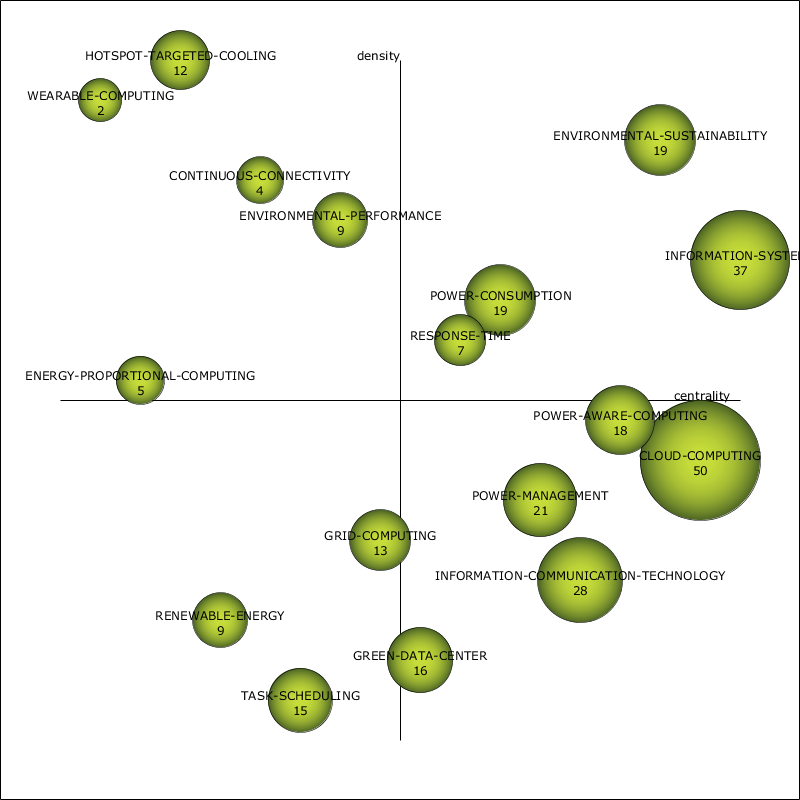
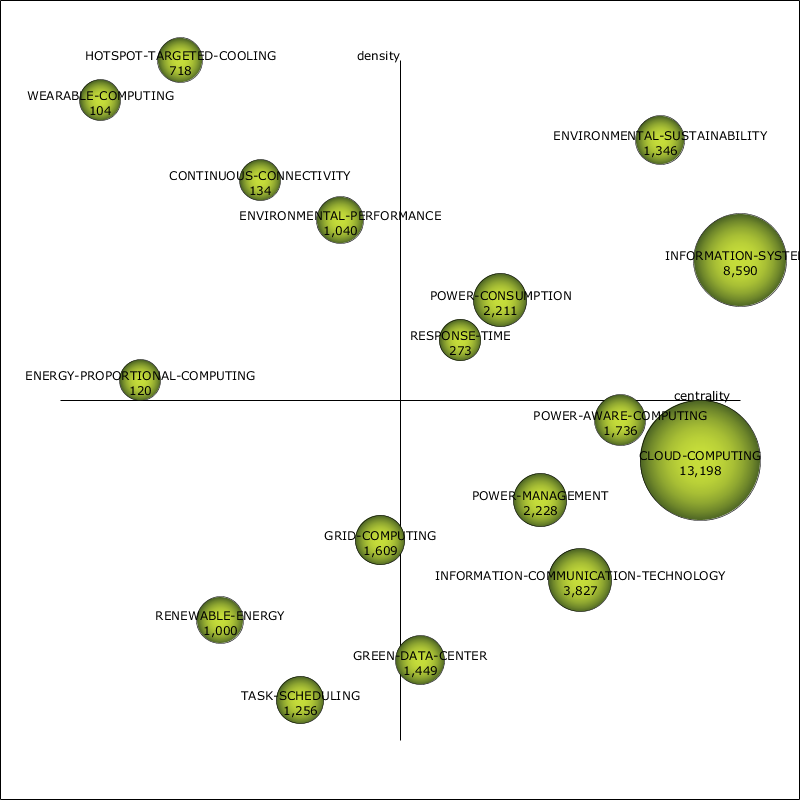

| Performance measure | Strategic diagram |
| unionDocuments-documentsCount |  |
| unionDocuments-hIndex |  |
| unionDocuments-sumCitations |  |
| Name | Centrality | Centrality range | Density | Density range |
| INFORMATION-SYSTEMS | 73.33 | 1 | 37.4 | 0.71 |
| ENVIRONMENTAL-SUSTAINABILITY | 32.02 | 0.88 | 71.28 | 0.88 |
| CLOUD-COMPUTING | 35.5 | 0.94 | 13.3 | 0.41 |
| POWER-AWARE-COMPUTING | 26.48 | 0.82 | 13.63 | 0.47 |
| INFORMATION-COMMUNICATION-TECHNOLOGY | 14.83 | 0.76 | 6.64 | 0.24 |
| POWER-MANAGEMENT | 13 | 0.71 | 7.41 | 0.35 |
| POWER-CONSUMPTION | 8.04 | 0.65 | 28.89 | 0.65 |
| HOTSPOT-TARGETED-COOLING | 0.18 | 0.18 | 152.63 | 1 |
| GREEN-DATA-CENTER | 3.76 | 0.53 | 5.16 | 0.12 |
| TASK-SCHEDULING | 1.54 | 0.35 | 4.97 | 0.06 |
| ENVIRONMENTAL-PERFORMANCE | 1.68 | 0.41 | 48.61 | 0.76 |
| GRID-COMPUTING | 3.49 | 0.47 | 7 | 0.29 |
| WEARABLE-COMPUTING | 0 | 0.06 | 100 | 0.94 |
| CONTINUOUS-CONNECTIVITY | 0.49 | 0.29 | 50 | 0.82 |
| ENERGY-PROPORTIONAL-COMPUTING | 0.06 | 0.12 | 21.43 | 0.53 |
| RESPONSE-TIME | 6.03 | 0.59 | 25.93 | 0.59 |
| RENEWABLE-ENERGY | 0.41 | 0.24 | 6.55 | 0.18 |
| Name | unionDocumentsdocumentsCount | unionDocumentshIndex | unionDocumentssumCitations |
| INFORMATION-SYSTEMS | 131 | 37 | 8,590 |
| ENVIRONMENTAL-SUSTAINABILITY | 32 | 19 | 1,346 |
| CLOUD-COMPUTING | 206 | 50 | 13,198 |
| POWER-AWARE-COMPUTING | 56 | 18 | 1,736 |
| INFORMATION-COMMUNICATION-TECHNOLOGY | 71 | 28 | 3,827 |
| POWER-MANAGEMENT | 55 | 21 | 2,228 |
| POWER-CONSUMPTION | 41 | 19 | 2,211 |
| HOTSPOT-TARGETED-COOLING | 20 | 12 | 718 |
| GREEN-DATA-CENTER | 32 | 16 | 1,449 |
| TASK-SCHEDULING | 33 | 15 | 1,256 |
| ENVIRONMENTAL-PERFORMANCE | 10 | 9 | 1,040 |
| GRID-COMPUTING | 25 | 13 | 1,609 |
| WEARABLE-COMPUTING | 2 | 2 | 104 |
| CONTINUOUS-CONNECTIVITY | 5 | 4 | 134 |
| ENERGY-PROPORTIONAL-COMPUTING | 9 | 5 | 120 |
| RESPONSE-TIME | 13 | 7 | 273 |
| RENEWABLE-ENERGY | 15 | 9 | 1,000 |
| Name | Cluster's network |
| INFORMATION-SYSTEMS | |
| ENVIRONMENTAL-SUSTAINABILITY |  |
| CLOUD-COMPUTING | |
| POWER-AWARE-COMPUTING | |
| INFORMATION-COMMUNICATION-TECHNOLOGY | |
| POWER-MANAGEMENT |  |
| POWER-CONSUMPTION | |
| HOTSPOT-TARGETED-COOLING | |
| GREEN-DATA-CENTER | |
| TASK-SCHEDULING |  |
| ENVIRONMENTAL-PERFORMANCE |  |
| GRID-COMPUTING |  |
| WEARABLE-COMPUTING | |
| CONTINUOUS-CONNECTIVITY | |
| ENERGY-PROPORTIONAL-COMPUTING |  |
| RESPONSE-TIME |  |
| RENEWABLE-ENERGY | |